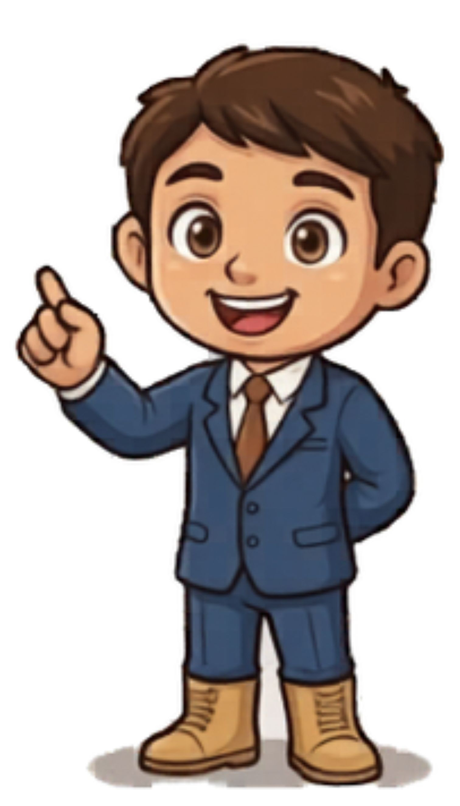

Reto 1
Test de Stroop
Di en voz alta el color de la tinta, no leas la palabra.
ROJO
1 / 4
 NeuroMotion-USAL
NeuroMotion-USAL

Estoy en la parte delantera de tu lóbulo frontal. Mi misión no es solo “pensar”, sino convertir tu intención en acción. Soy el director estratégico que decide qué hacer, cuándo y cómo, adaptando tu comportamiento a cada contexto.
Di en voz alta el color de la tinta, no leas la palabra.
Motor: pulsa el botón repetidamente para no caer.
Cognitivo: resuelve las sumas a la vez.
Caminar por casa o masticar. Son acciones muy repetidas que dependen menos de mí y fluyen gracias a los ganglios basales y el cerebelo.
Levantarse esquivando una mesa o caminar mientras hablas. Al ser tareas nuevas o complejas, reclaman mi atención directa y constante.
No siempre aparece parálisis. Puedes conservar fuerza, pero perder la capacidad de organizar tu vida. Aparece impulsividad, distractibilidad, apatía o problemas para mantener rutinas y regular emociones.
Entrenamos la doble tarea en entornos reales. Graduamos la complejidad cognitiva para que el paciente no solo recupere la marcha, sino que sepa decidir cuándo y cómo moverse seguro.
Reeducamos la capacidad de planificar y organizar los pasos de las actividades de la vida diaria, como vestirse o cocinar, fomentando la autonomía real.
Trabajamos específicamente la memoria de trabajo, la flexibilidad cognitiva, el control de impulsos y la gestión emocional ante la frustración.
Mejoramos la organización del discurso, el control inhibitorio durante la conversación y la adaptación social comunicativa.